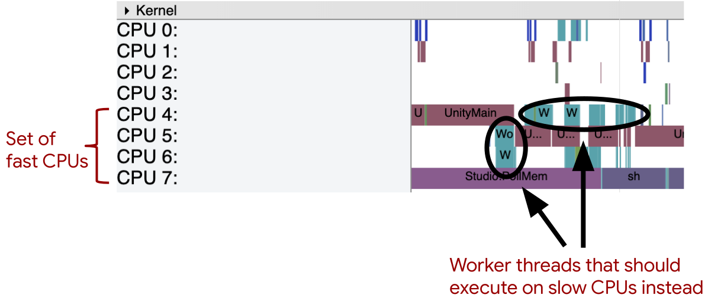
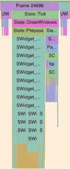

Зміст
- Введення
- 1. Що впливає на продуктивність
- 2. Способи оптимізації коду
- 3. Оптимізація движка на основі мови java
- 4. Оптимізація на основі openGL
- 5. Високорівнева оптимізація
- 6. Низькорівнева оптимізація
- 7. Оптимізація ігор для смартфонів
- Висновок
- Список джерел
Введення
Продуктивність є важливим компонентом будь-якої гри, від неї залежить популярність гри, комфорт користувача і загальне враження [1]. Під продуктивністю зазвичай мають на увазі середній рівень FPS в грі за певний проміжок часу. FPS (Frames per Second) - число кадрів в секунду, кадри - це зображення, які обробляє графічний адаптер по команді центрального процесора. Чим більше кадрів демонструється в секунду, тим плавніше і комфортніше гра.
Всупереч очікуванням небагато гравців вимагають високих показників фпс, для більшості досить середніх показників в 30 одиниць, а для деяких навіть менше. Дослідження пророблені компанією Lesta Studio, показують, що для всієї сукупності користувачів зв'язок між продуктивністю і комфортною грою досить слабка (рис.1).
Рисунок 1-Діаграма залежності між сприйняттям комфорту та середнім FPS
Однак рівень комфорту залежить також від жанру гри і від самого користувача. Наприклад, багато консольні ігри працюють на частоті 30fps, але з такими показниками картинка недостатньо плавна, а відгук на маніпуляції гравця запізнюється, що заважає повному зануренню в гру. Для гравців в казуально-аркадні ігри буде досить 40 + fps, для шутерів від першої особи, стратегій, ритм-ігор, MOBA знадобиться близько 60-100fps [2]. Показник FPS вище 100 буде потрібно гравцям змагальних шутерів або кіберспортсменів.
Таким чином, якщо не брати до уваги переваги в fps професійних гравців, то для більшості буде комфортним середній показник в 60fps, цей показник вважається комфортним мінімумом.
Що впливає на продуктивність? [3]
Розглянемо найпопулярніші фактори, що впливають на оптимізацію
Основні фактори, що впливають на оптимізацію
- Клієнтське ПЗ
Якщо система завантажена фоновими процесами або запущені програми, що звертаються до диска під час гри, то ресурсів для самої гри може виявитися недостатньо.
- Конфігурація ПК
Від комплектуючих комп'ютера безпосередньо залежить продуктивність.
- Налаштування графіки
Графіку налаштовують користувачі зазвичай самі або використовують пресети, проте ні той ні інший варіант не є гарантією того, що настройки будуть виставлені максимально оптимально, через що користувач втрачає продуктивність.
- Проблеми мережі
Клієнт-серверна взаємодія не завжди стійко, нерідко у користувачів виникають проблеми з мережею, що впливає на продуктивність мережевих ігор. Причиною цього можуть послужити проблеми на стороні провайдера, велика кількість бездротових клієнтів неоптимальний мережевий маршрут доставки трафіку, неякісної мережеве обладнання.
- Модифікації
Модифікації оригінальної гри сторонніми розробниками негативно впливають на продуктивність. Вони не тільки знижують середній fps, але і створюють різкі провали в тих випадках, де чистий клієнт працює стабільно.
- Швидкість роботи програми
Існує величезна кількість різних ігрових движків зі своїми плюсами і мінусами, всі вони споживають різну кількість ресурсів, в залежності від якості архітектури і підтримуваних ефектів. Впливає також і мова програмування, на якому написаний движок, тому що в різних мовах ресурси розподіляються по різному. Про це і піде мова далі.
Способи оптимізації коду
Для того, щоб движок видавав максимальну кількість fps необхідно не тільки вміти з ним ефективно працювати, але і знати тонкощі розробки мовою, на якому написаний движок, і принципи роботи движка для кращого розуміння процесу розподілу ресурсів. [4]
Існує багато різних факторів, що впливають на швидкість обробки кадрів, розглянемо загальні методи оптимізації коду. Які можуть підійти практично в будь-якій ситуації:
- Мінімізація впливу об'єктів за межами екрану
Мінімізація обсягу обчислень за допомогою оптимізації відтворення об'єктів надзвичайно важлива. Найчастіше цим займаються движки, або ж графічний процесор. Для реалізації необхідно розділити об'єкт на 2 шари - перший буде графічним поданням об'єкта, а другий - даними і функціями. Таким чином, якщо об'єкт знаходиться за межами екрану - нам більше не потрібно його малювати.
- Незалежність від оновлення кадрів
Зазвичай в ігрових движках більшість об'єктів оновлюються в кожному кадрі, це сильно навантажує процесор і знижує продуктивність. Необхідно, по можливості, позбутися від оновлення в кожному кадрі. Для цього необхідно відокремити функцію рендеринга і викликати її тільки при зміні стану об'єкта.
- Безпосередні обчислення і пошук значень
Непогану надбавку до продуктивності може дати хешування тригонометричних функцій, тому що ефективніше зберігати велику таблицю і брати дані з неї, а не виконувати розрахунки на льоту.
- Час простою
Необхідно виділити функції, які не залежать від часу, наприклад погодні умови і обчислювати їх, коли користувач відійшов, зайнятий читанням або іншими не витратними до ресурсів речами. Час яке звільняється, коли користувач зайнятий речами не навантажують процесор, можна використовувати для обчислення безлічі інших подій.
Оптимізація движка на основі мови java
Так само не зайвим буде згадати оптимізацію коду, спираючись на особливості мови програмування java і особливості роботи з движками на його основі [5]:
- Цикли
Якщо вам необхідно обійти великий масив даних, наприклад список прямокутників (для рендеринга), ворогів або будь-яких інших важких об'єктів і ви збираєтеся для цього використовувати цикл for, то краще пользовться зворотним for. Зворотний for дає більшу ефективність за рахунок того, що йому не потрібно кожен раз перевіряти розмір масиву, а також це відбувається, тому що порівняння з нулем є нормальним, в той час як порівняння з цілим числом вимагає віднімання. Але якщо немає необхідності використовувати цикл for, то більш ефективним буде while.
- Потоки
Необхідно розділяти важкі дії на різні потоки і не запускати складну логіку в потоці відтворення. Під час профілювання процесора ви побачите потік з назвою GLThread. Більшість двигунів використовують GL 2.0 / 3.0 для візуалізації, і це потік, який містить контекст GL. Це означає, що кожна зміна інтерфейсу користувача повинна здійснюватися через цей потік, інакше трапляються погані речі — текстури не завантажуються, елементи інтерфейсу змінюються одночасно з різних місць, це може бути безлад. Проблема полягає в тому, що використання цього потоку залишає користувача із завислим додатком.
- Пам'ять
Не варто забувати очищати компоненти, які вже не потрібні. Java має власний збирач сміття, який очищає непотрібні класи, але деякі двигуни, такі як libGDX, цього не роблять. Це пов'язано з тим, що пам'ять OpenGL не управляється JVM GC, і, отже, якщо ви створюєте власні текстури, вам доведеться видаляти їх вручну, інакше ви ризикуєте важко налагоджуваним витоком пам'яті.
- Пакети
Виклик початку і кінця пакета спрайтів і ShapeRenderer займає багато пам'яті. Отже, намагайтеся з усіх сил викликати початок і кінець тільки один раз за кадр. Спробуйте візуалізувати всі свої спрайти, а потім візуалізувати фігури. Замість того, щоб рендерити ваші спрайти, потім форми, а потім повторно відкриваючи ваш spritebatch.
- Окремі методи
Є деякі методи, які вимагають багато ресурсів (або більше, ніж інші), коли вони використовуються, наприклад перетини класу Rectangle. Наприклад, найкраще, що ви можете зробити для перегляду масиву прямокутників, — це спочатку перевірити, чи близькі обидва прямокутники, і якщо так, то викликати метод Intersects для них. Замість виклику Intersects з усіма прямокутниками в масиві.
- Візуалізація
Метод малювання-це ще один елемент, який вимагає великої кількості ресурсів, якщо вам потрібно змінити стан елемента, навіть якщо він знаходиться поза екраном, ви можете щоразу намагатися оновлювати його логіку/змінні, але викликати метод малювання лише якщо він знаходиться всередині координат екрана.
- Змінні
Оголошення змінних або об'єктів у поганих місцях може спричинити зависання, уникати оголошення змінних у циклі візуалізації та, в основному, не оголошувати їх всередині чогось на зразок циклу for, натомість оголошувати їх поза циклом та оновлювати його значення всередині. Хороший момент у цьому полягає в тому, що це не має значення, коли ми говоримо про примітивні типи даних, тому, якщо змінна має тип int, boolean або float, її оголошення всередині циклу не матиме великого впливу на продуктивність.
- Патерни
Патерни значно спрощують розробку і ефективність додаток, а також підтримку коду. Якщо ви хочете мати один елемент, який може взаємодіяти і перебувати в будь-якому класі вашої програми, щось всюдисуще, наприклад клас гравця, ви можете зробити його класом Singleton (це дуже просто і дасть вам більш зручний код). Якщо ви не хочете, щоб у вашій програмі були марні екземпляри, які, можливо, ви ніколи не будете використовувати, ви можете використовувати шаблон дизайну Factory.
Оптимізація на основі openGL
На перший погляд може здатися, що продуктивність додатків, заснованих на OpenGL, визначається в першу чергу продуктивністю реалізації самої бібліотеки OpenGL [6]. Це вірно, однак організація всього додатка (використання локальних і глобальних змінних, структур даних, бібліотек, послідовність виконання команд) також дуже важлива.
Високорівнева оптимізація
Зазвичай від програми під OpenGL потрібно візуалізація високої якості на інтерактивних швидкостях. Але, як правило, і те й інше відразу отримати не вдається. Отже, необхідний пошук компромісу між якістю і продуктивністю. Існує багато різних підходів до цього питання [7]:
– відображення геометрії сцени з низькою якістю під час анімації, а в моменти зупинок показ її з найкращою якістю;
– об'єкти, які знаходяться повністю поза полем видимості, можуть бути ефективно відсічені без передачі на конвеєр OpenGL за допомогою перевірки потрапляння обмежуючих їх простих обсягів (сфер або кубів) в піраміду зору;
– візуалізація моделі зі зменшеною кількістю примітивів під час інтерактивного обертання (наприклад, при натиснутій клавіші миші) і відображення моделі повністю при малюванні статичного зображення;
– під час анімації можна відключити псевдотонування (dithering), плавну заливку, накладення текстури і включати все це під час демонстрації статичних зображень (цей підхід особливо ефективний для систем без апаратної підтримки OpenGL).
Низькорівнева оптимізація
Об'єкти, що відображаються за допомогою OpenGL, зберігаються в деяких структурах даних. Швидкість візуалізації визначається ефективністю використання таких структур. Бажано, щоб використовувалися структури даних, які можуть бути швидко і ефективно передані на конвеєр OpenGL. Наприклад, якщо необхідно відобразити масив трикутників, то використання покажчика на цей масив значно більш ефективно, ніж передача його OpenGL поелементно.
Припустимо, що створюється додаток, який реалізує малювання карти місцевості. Один з компонентів бази даних-список міст з їх шириною, довготою і назвою.
Для зберігання інформації про місто створюється відповідна структура даних. Список міст може зберігатися як масив таких структур. Потім створюється функція, яка малює міста на карті у вигляді точок різного розміру з підписами: якщо місто маленьке, то точки мають розмір 2 px, якщо великий - 4 px.
Реалізація, представлена в першому варіанті, невдала з наступних причин:
– glPointSize() викликається для кожної ітерації циклу;
– між glBegin() і glEnd() малюється лише одна точка;
– вершини визначаються в неоптимальному форматі.
У другому варіанті реалізації glPointSize() викликається тільки двічі, і збільшується число вершин між glBegin () і glEnd (). Однак залишаються ще шляхи для оптимізації. Якщо поміняти структури даних, то можна ще підвищити ефективність малювання точок.
Найоптимальнішим можна вважати третій варіант. Після реорганізації структури міста різних розмірів зберігаються в різних списках, положення точок зберігаються окремо в динамічному масиві. Виключається необхідність в умовному операторі всередині glBegin / glEnd і є можливість використовувати масиви вершин для оптимізації.
Оптимізація ігор для смартфонів [8]
- Швидкість завантаження
Гравці хочуть якомога швидше зануритися в дію вашої гри, тому важливо максимально скоротити час завантаження вашої гри. Наступні заходи зазвичай допомагають скоротити час завантаження:
– Виконати ледачу завантаження. Якщо ви використовуєте однакові активи в послідовних сценах або рівнях гри, завантажуйте ці активи лише один раз.
– Зменшіть розмір своїх assets. Таким чином, ви можете пов'язати нестиснуті версії цих ресурсів з APK вашої гри.
– Використовуйте ефективний для диска метод стиснення. Прикладом такого методу є zlib.
- Тримайте потоки з великою кількістю пам'яті на одному процесорі
На багатьох мобільних пристроях кеші L1 знаходяться на певних процесорах, а кеші L2 — на наборі процесорів, які мають спільний годинник. Щоб максимізувати потрапляння в кеш L1, як правило, найкраще, щоб основний потік вашої гри, поряд з будь-якими іншими потоками з великим обсягом пам'яті, виконувався на одному процесорі.
- Відкладайте короткочасну роботу на процесори з меншою потужністю
Більшість ігрових двигунів вміють відкладати операції робочого потоку на інший процесор порівняно з основним потоком вашої гри. Однак движок не знає про конкретну архітектуру пристрою і не може передбачити робоче навантаження вашої гри так само добре, як Ви [9]. Більшість пристроїв типу "система на чіпі" мають принаймні 2 Загальні тактові генератори. один для швидких процесорів пристрою та один для повільних процесорів пристрою. Наслідком цієї архітектури є те, що якщо одному швидкому процесору потрібно працювати на максимальній швидкості, всі інші швидкі процесори також працюють на максимальній швидкості. У прикладі звіту, показаному на рис. 2, показана гра, яка використовує переваги швидких процесорів. Однак, цей високий рівень активності швидко генерує велику кількість енергії і тепла.
Малюнок 2-демонстрація неоптимальне призначення потоків процесорам пристрою
- Теплове навантаження
Коли пристрої перегріваються, вони можуть гальмувати процесор та/або графічний процесор, і це може несподівано вплинути на ігри. Ігри, які включають складну графіку, важкі обчислення або стійку мережеву активність, частіше стикаються з проблемами. Використовуйте тепловий API, щоб відстежувати зміни температури на пристрої і вживати заходів для підтримки більш низького енергоспоживання і більш низької температури пристрою. Коли пристрій повідомляє про перегрів, припиніть поточну діяльність, щоб знизити енергоспоживання. Наприклад, зменшіть частоту кадрів або тесселяцію багатокутників.
Завантаження елементів інтерфейсу користувача. для підтримки постійної частоти кадрів важливо враховувати відносно невеликий розмір мобільних дисплеїв і максимально спростити користувальницький інтерфейс.
Звіт показаний на малюнку 3, є прикладом кадру інтерфейсу користувача, який намагається відобразити занадто багато елементів у порівнянні з можливостями мобільного пристрою. Хороша мета-скоротити час оновлення інтерфейсу користувача до 2-3 мілісекунд. Таких швидких оновлень можна досягти, виконавши оптимізацію, подібну до наступної:– Оновлювати тільки ті елементи на екрані, які були переміщені.
– Обмежте кількість текстур та шарів інтерфейсу користувача. Об'єднати Графічні виклики, такі як шейдери і текстури, які використовують один і той же матеріал.
– Перенести операції анімації елементів на GPU.
– Виконати більш агресивне відсікання усіченої піраміди і оклюзії.
– Якщо можливо, виконати операції малювання за допомогою vulcan API.
– Накладные расходы на вызовы отрисовки ниже на Vulkan. [10]
Рісунок 3-Звіт для гри, в якій одночасно відображаються десятки елементів користувальницького інтерфейсу.
Висновок
Існує величезна кількість ігрових движків, які надають програмісту багато різних функцій і дозволяють створювати якісні ігри, однак якщо вона розрахована на користувачів зі слабким пристроєм, то необхідно використовувати знання мови програмування, архітектури движка і операційної системи, щоб домогтися задовільних показників продуктивності програми. Для створення подібних проектів необхідний великий досвід і чимала кількість навичок.
У подальших дослідженнях планується перевірити на практиці наведені вище методи і представити метрики у вигляді графіків і діаграм з метою їх удосконалення.
Список джерел
- 1. Каким должен быть комфортный FPS в играх [Електронний ресурс] – Режим доступу: https://andpro.ru/blog/pc/kakim-dolzhen-byt-komfortnyy-fps-v-igrakh/
- 2. Почему производительность в играх — это не просто средний FPS [Електронний ресурс] – Режим доступу: https://habr.com/ru/ company/lesta_studio/blog/265487/
- 3. Основы оптимизации кода игр [Електронний ресурс] – Режим доступу: https://habr.com/ru/post/358176/
- 4. Optimizing your Game [Електронний ресурс] – Режим доступу: https://www.reddit.com/r/libgdx/comments /7cw4va/optimizing_your_game/
- 5. The LibGDX performance guide [Електронний ресурс] – Режим доступу: https://yairm210.medium.com/the-libgdx-performance-guide-1d068a84e181
- 6. OpenGL Documentation [Electronic resource] – https://www.khronos.org/opengl/
- 7. Методы оптимизации под OpenGL [Електронний ресурс] – https://cyberleninka.ru/article/n/metody-optimizatsii-pod-opengl
- 8. Best practices for Android game optimization [Електронний ресурс] – Режим доступу: https://developer.android.com /games/optimize
- 9. libGDX - фреймворк для разработки игр [Електронний ресурс] – Режим доступу: http://www.libgdx.ru/2013 /08/introduction.html
- 10. Vulkan [Електронний ресурс] – Режим доступу: https://www.vulkan.org